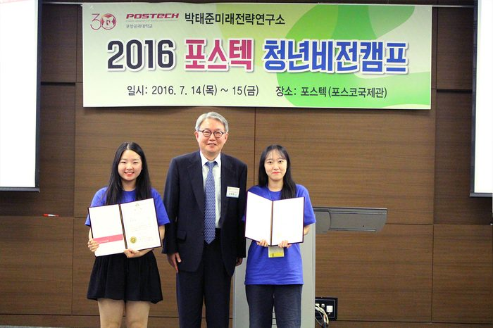
내용
박태준미래전략연구소에서는 2016 전국 대학(원)생 공모전 시상식과 더불어 「제1회 포스텍 청년비전캠프」를 개최하였습니다.
본 행사는 지난 두 달여에 걸쳐 전국 대학(원)생들을 대상으로 실시한 ‘행복한 한국사회로 가기 위해 가장 중요한 과제는 무엇이며, 어떻게 해결해야 하는가?’에 대한 공모전 참가자들을 대상으로 1박 2일 동안 포스텍 캠퍼스에서 개최되었습니다 .
명사 초청 특강 및 글로벌 리더십 함양 프로그램, 포스코와 포스텍 탐방 등 다양한 액티비티 프로그램과 더불어 전국 각지에서 모인 대학생∙대학원생들이 국가 미래이슈에 대한 생각을 공유하고 그 해결책을 모색할 수 있도록 공모전 주제에 대한 토론의 시간을 가졌습니다.
• 2016년 에세이 공모전 주제
‘행복한 한국사회로 가기 위해 가장 중요한 과제는 무엇이며, 어떻게 해결해야 하는가?’
• 참석자
포스텍 부총장 조무현 교수, 전상인 서울대 교수, 최광웅 박태준미래전략연구소 명예소장,
공모전 참가자 50명 및 박태준미래전략연구소 임직원
• 시상
내역
에세이: 대상 1편, 우수상 10편,
UCC : 대상 1편, 우수상 3편
• 일 정
19:20 ~ 23:00 공모전 발표대회 및 토론회
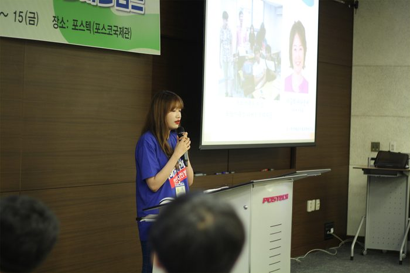
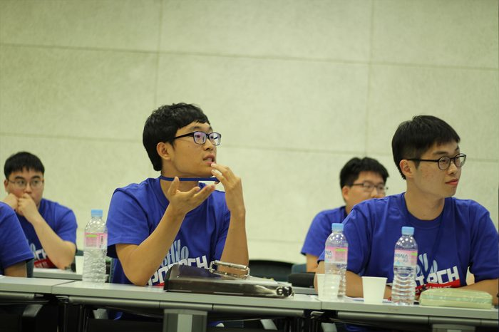
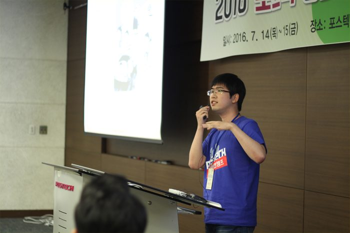
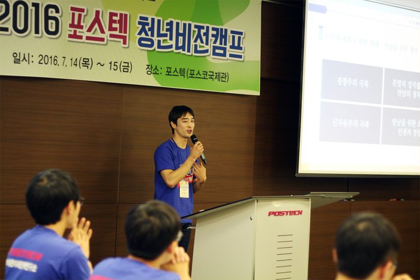
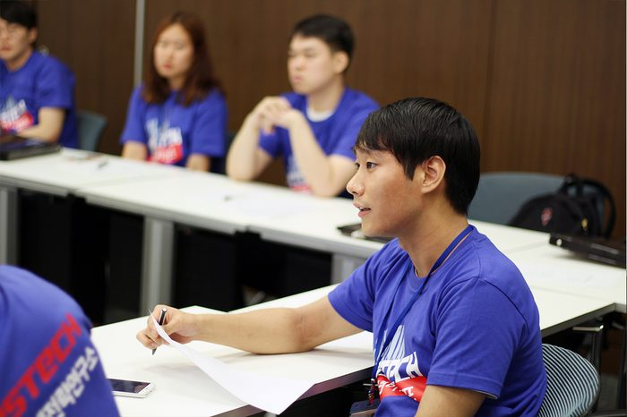
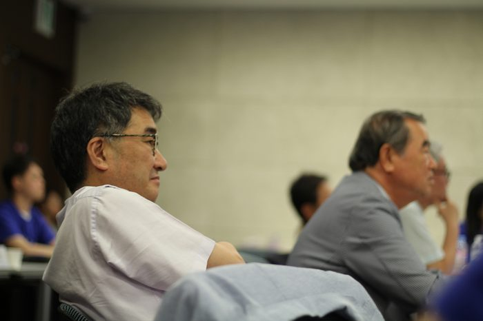
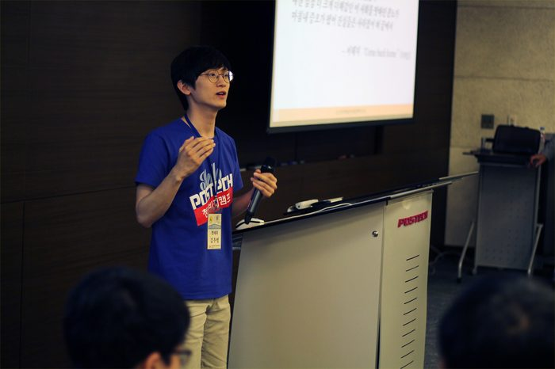
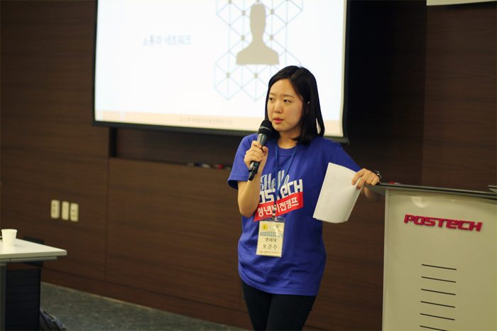
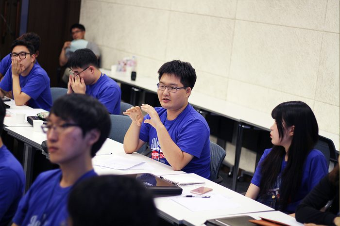
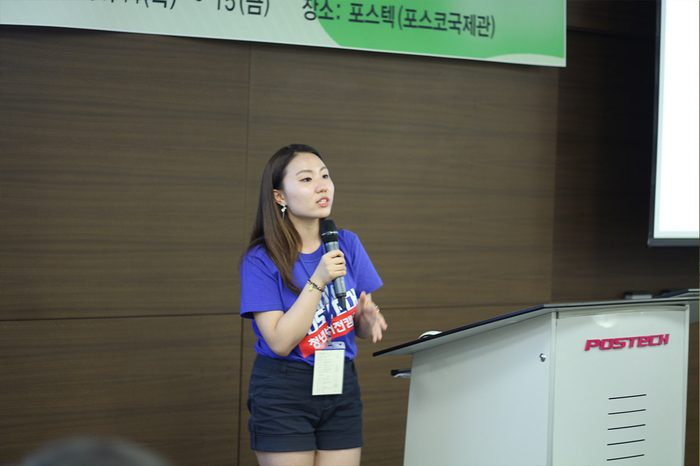
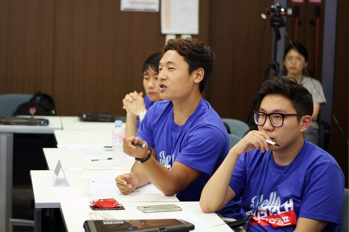
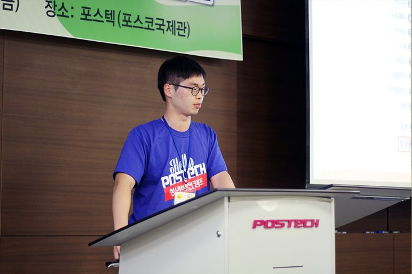
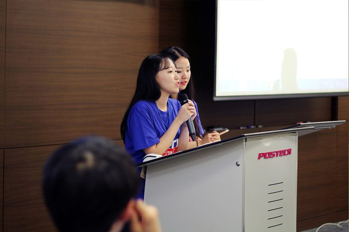
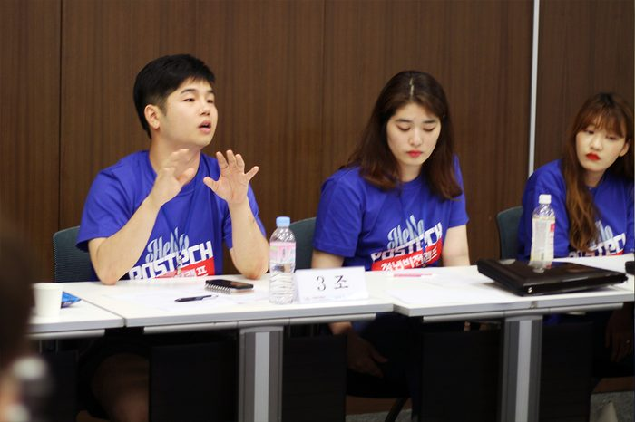
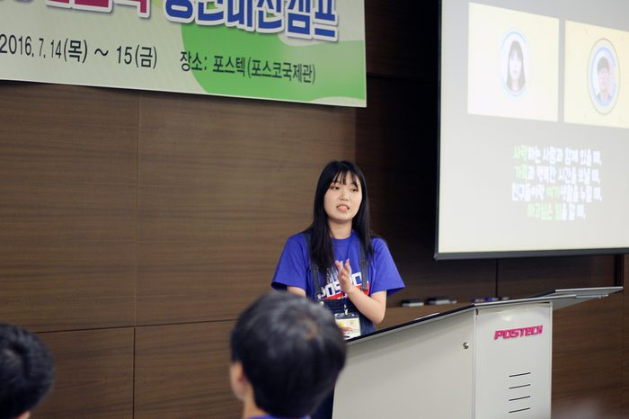
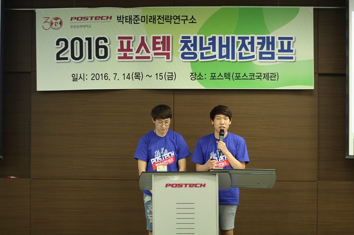
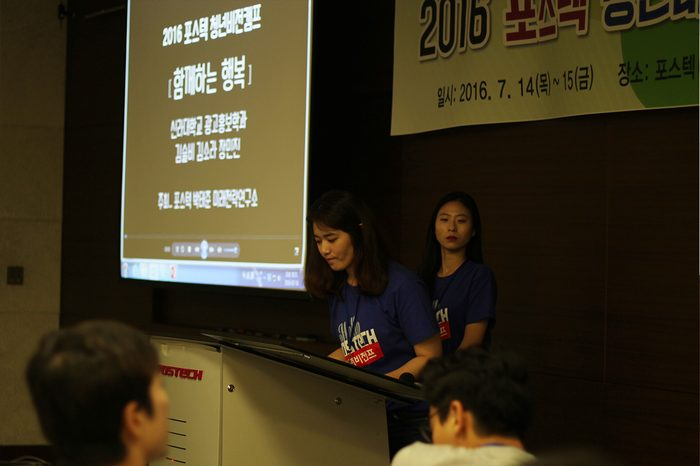
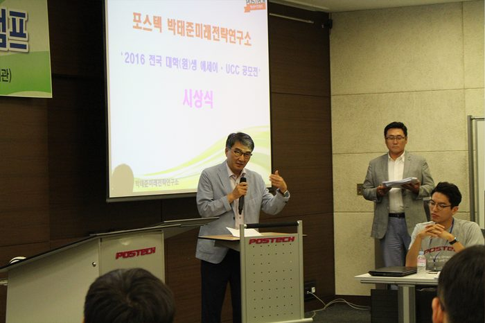
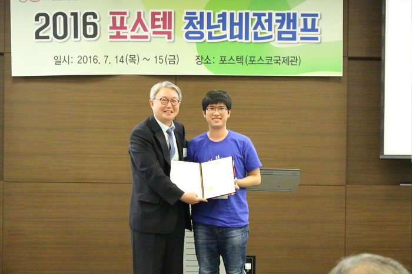
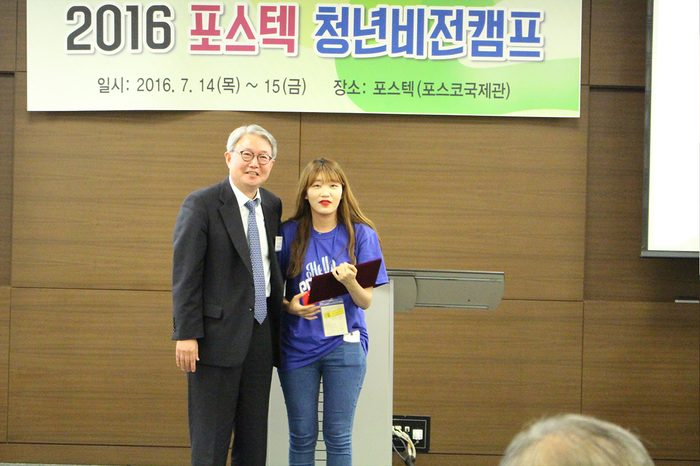
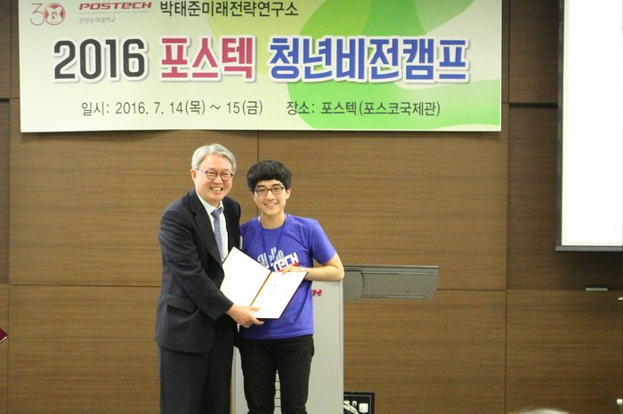
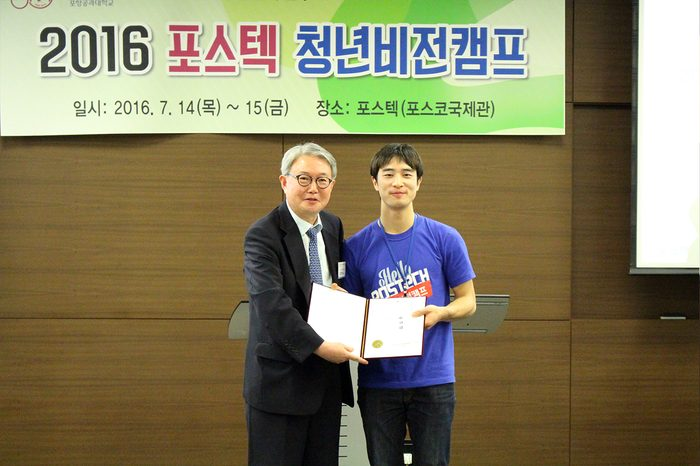
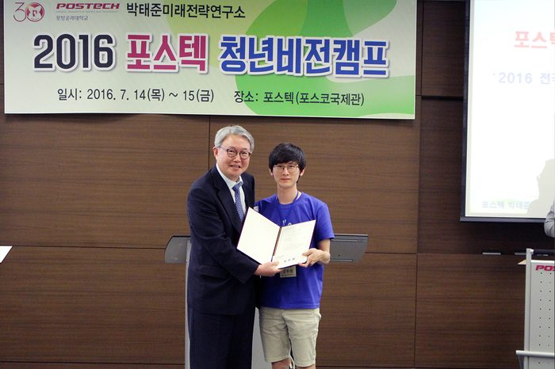
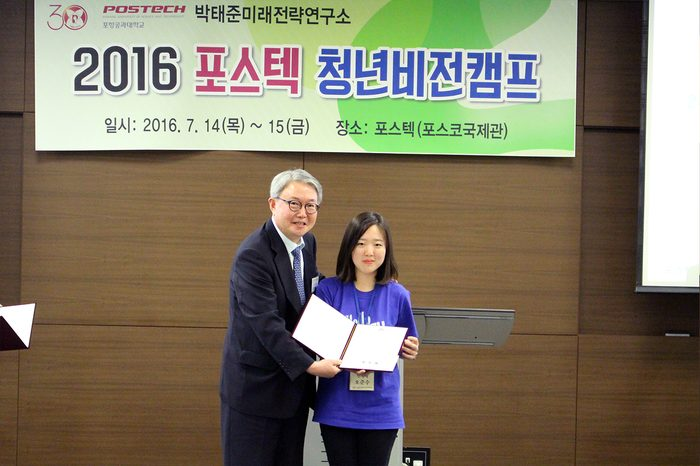
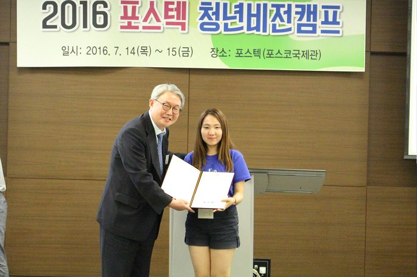
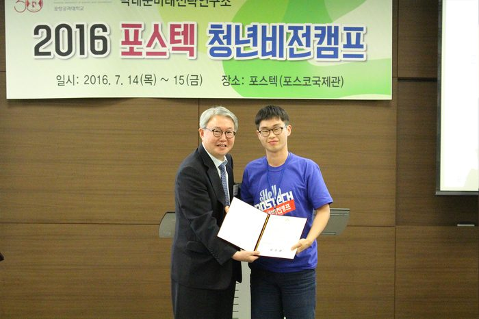
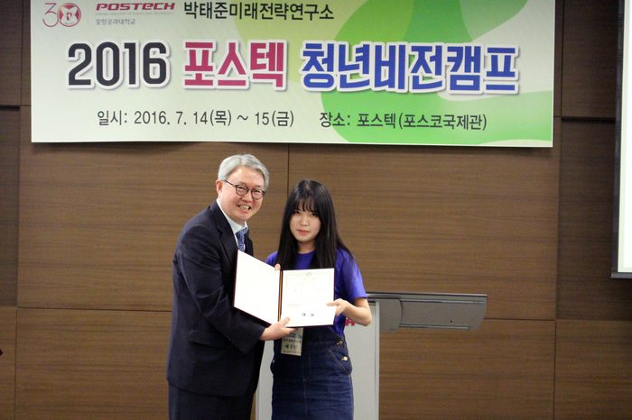
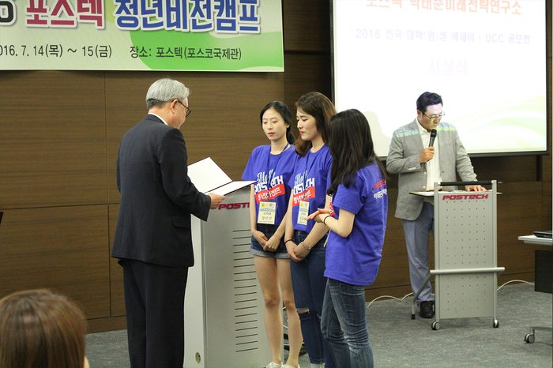